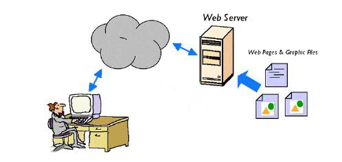
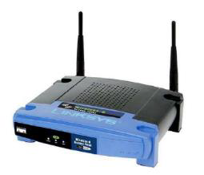

Routing adalah proses menentukan jalur terbaik untuk mengirim paket data dari satu jaringan ke jaringan lain. Perangkat yang melakukan proses ini adalah router.
Switch menghubungkan beberapa komputer dalam jaringan LAN dan mengirimkan data langsung ke perangkat tujuan menggunakan alamat MAC.
NIC (Network Interface Card) adalah kartu jaringan yang dipasang pada komputer agar dapat terhubung ke jaringan.
Gateway merupakan konsep penghubung antar jaringan yang menggunakan protokol berbeda.
Router bertugas meneruskan paket data dari satu jaringan ke jaringan lain menggunakan tabel routing.
Switch mengirimkan data hanya ke perangkat tujuan sehingga lalu lintas jaringan lebih efisien dibanding hub.

Jawaban: Client ServerModel client-server adalah arsitektur jaringan dimana server menyediakan layanan dan client meminta layanan tersebut.

Jawaban: RouterRouter digunakan untuk menghubungkan dua jaringan atau lebih dan menentukan jalur pengiriman data.
Model OSI terdiri dari: Physical, Data Link, Network, Transport, Session, Presentation, Application.
Putih Orange – Orange – Putih Hijau – Biru – Putih Biru – Hijau – Putih Coklat – Coklat.